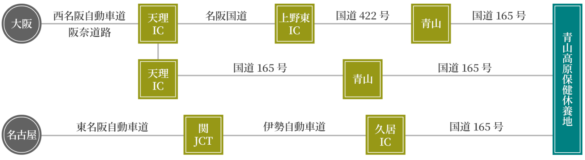

YouTube
YouTube Instagram
Instagram Facebook
Facebook
大阪方面・・・所要時間約２時間
名古屋方面・・・所要時間約２時間
アクセス
青山高原保健休養地
〒515-2614
三重県津市白山町伊勢見４
TEL：059-269-3226
お車でのアクセス

周辺情報
最寄りのショッピングスポット、観光スポット、温泉などをご紹介します。
当施設は津市に位置しながら、伊賀市にも隣接し、温泉や観光地にも恵まれたロケーションにあります。
※所要時間は、当施設管理センターから車での目安時間です。
当施設は津市に位置しながら、伊賀市にも隣接し、温泉や観光地にも恵まれたロケーションにあります。
※所要時間は、当施設管理センターから車での目安時間です。
最寄りのスーパー・コンビニ・ガソリンスタンドなど
※左右にスクロールしてご確認ください。| スポット | 所要時間 | 住所 | 内容 |
|---|---|---|---|
| こうづの郷 ふれあい市場 | 約１２分 | 三重県伊賀市伊勢路１６１０－１ | 土日のみ開かれる市場。地元の新鮮な野菜をはじめ、骨董市、エスニック小物、猪肉、鹿肉なども販売されています。 |
| Aコープ 三重青山店 | 約１５分 | 三重県伊賀市阿保４６４ | 伊賀方面に約１５分。当施設から一番近いショッピングセンターです。新鮮な生鮮食品も揃い充実した品揃えです。 |
| 白山ぬくいの郷直売所 | 約１５分 | 三重県津市白山町中ノ村９４－１ | 採れたて新鮮、地元野菜を販売中。毎月第2土曜、第3土曜イベントも開催中です。 |
| マックスバリュ白山店 | 約１９分 | 三重県津市白山町二本木４６９９ | 下記ホームセンターコメリハード＆グリーン 白山店と同じ敷地内にあります。津方面、最寄りのスーパーです。 |
| コメリ ハード＆グリーン白山店 | 約１９分 | 三重県津市白山町二本木４７０２ | 上記マックスバリュ白山店と同じ敷地内にあります。津方面、最寄りのホームセンターです。 |
| セブンイレブン 津市白山町店 | 約１９分 | 三重県津市白山町二本木４６６７ | 上記マックスバリュ白山店の道を挟んで向いあります。津方面、最寄りのコンビニです。 |
| ENEOS Dr.Drive 白山 SS | 約１９分 | 三重県津市白山町二本木４６７０ | 上記マックスバリュ白山店の道を挟んで向いあります。津方面、最寄りのガソリンスタンドです。 |
温泉施設
※左右にスクロールしてご確認ください。| スポット | 所要時間 | 住所 | 内容 |
|---|---|---|---|
| 榊原温泉 | 約２７分 | 三重県津市榊原町５８２４－１ | 清少納言が「枕草子」で『湯は七栗の湯 有馬の湯 玉造の湯』と讃えたことでも知られる「日本三名泉」のひとつ。美人湯としても有名。 |
観光情報
※左右にスクロールしてご確認ください。| スポット | 内容 | ホームページ |
|---|---|---|
| 津市観光協会 | 当施設がある津市の観光地・イベント・お食事処等が豊富に掲載されています。 | ホームページはこちら |
| 伊賀上野観光協会 | 当施設は伊賀市にも隣接しております。観光地・イベント・お食事処等が豊富に掲載されています。 | ホームページはこちら |
| 名張市観光協会 | 当施設は名張市にも隣接しております。観光地・イベント・お食事処等が豊富に掲載されています。 | ホームページはこちら |